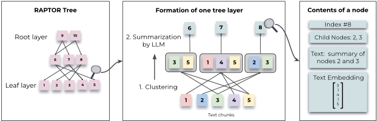
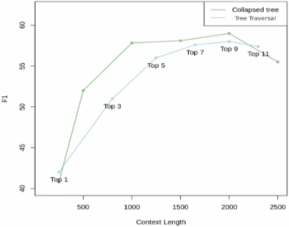
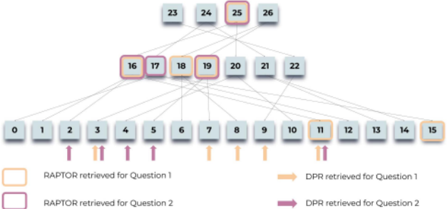
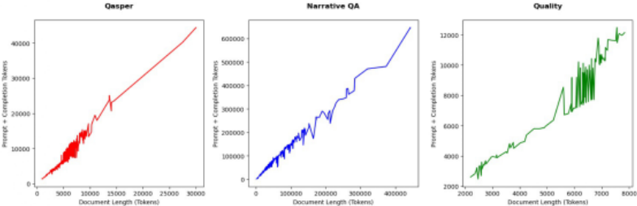
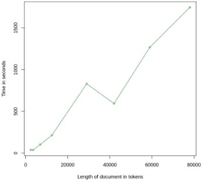
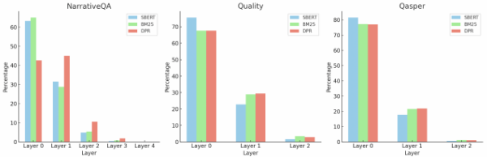

RAPTOR: Recursive Abstractive Processing for Tree-Organized Retrieval
RAPTOR：面向树状组织的递归抽象处理检索
简介
现有 RAG 方法只检索少量短连续文本块，难以回答需要整合全文信息的主题性、多跳问题。RAPTOR 递归地对文本块做嵌入、GMM+UMAP 软聚类与 LLM 摘要，自底向上构建多层树索引，使检索能按问题粒度从不同抽象层取材；查询提供 tree traversal 与 collapsed tree 两种策略，实验表明后者更优。在 QuALITY、QASPER、NarrativeQA 三个长文档 QA 基准上，RAPTOR 配合 GPT-4 将 QuALITY 最佳准确率绝对提升 20% 至 82.6%，QASPER F-1 达 55.7% 创当时新纪录。摘要幻觉率约 4% 且不向上传播，树构建的 token 开销与时间随文档长度线性增长。对团队的知识库问答与长文档上下文组织有直接落地价值。
问题
现有检索增强方法只从语料中检索少量短连续文本块，无法表达和利用大规模篇章结构，导致需要整合文档多个部分的主题性、多跳问题（如理解整本书）难以回答；而直接依赖长上下文又存在模型对远距离信息利用率下降、成本高、速度慢的问题。
方法
RAPTOR 将语料切成约 100 token 的文本块并用 SBERT 嵌入作为叶节点；用 UMAP 降维配合 GMM 软聚类（BIC 选择簇数、先全局后局部两步聚类，允许一个块属于多个簇、跨远距离语义分组），再用 gpt-3.5-turbo 对每簇生成摘要作为父节点，递归执行直到无法继续聚类，形成多层树。查询支持两种策略：tree traversal（逐层取 top-k）与 collapsed tree（将全树展平为单层，按余弦相似度检索直至 token 预算，论文采用 2000 token），实验显示 collapsed tree 因能按问题自适应选择粒度而表现更好。
关键结果
QuALITY：RAPTOR+GPT-4 准确率 82.6%，超过此前最佳 62.3%（绝对提升 20%）；在 QuALITY-HARD 子集上超 CoLISA 21.5%
QASPER：RAPTOR+GPT-4 F-1 达 55.7%，超过 CoLT5 XL 的 53.9%；相对 DPR 在 GPT-3/GPT-4/UnifiedQA 上分别提升 1.8/2.7/4.5 分，相对 BM25 提升 6.5/5.5/10.2 分
NarrativeQA：ROUGE-L 超 BM25/DPR 7.3/2.7 分，BLEU-1、BLEU-4、METEOR 超 BM25 1.7–5.8 分、超 DPR 0.7–2.1 分，并创下 METEOR 新 SOTA
QuALITY 用 GPT-3 时准确率 62.4%，较 DPR/BM25 提升 2%/5.1%；用 UnifiedQA 时较 DPR/BM25 提升 2.7%/6.7%
检索到的节点中 18.5%–57% 来自非叶层，全树检索优于只检索特定层或仅用根节点摘要
摘要平均压缩率 72%（摘要长度/子节点长度比为 0.28，平均摘要 131 token）
150 个采样节点中 4%（6 个）含轻微幻觉，不向父节点传播，对 QA 任务无可辨影响
树构建的 token 开销与构建时间随文档长度（12,500–78,000 token）线性增长，在 16GB 内存的 Apple M1 上验证
在 QASPER 20 篇文档子集上，collapsed tree（2000 token）一致优于 tree traversal
消融实验：GMM 语义聚类优于按相邻块递归摘要的平衡树（recency-based tree）
创新点
与只检索短连续块的标准 RAG、以及按相邻关系递归摘要的方法（Wu et al. 2021、LlamaIndex）不同，RAPTOR 用基于语义相似度的 GMM 软聚类（配合 UMAP 降维）实现跨远距离文本分组，并保留全部中间摘要节点，使检索可在不同抽象粒度上进行；collapsed tree 查询让每个问题自适应取到合适粒度的上下文，而非固定各层节点比例。
团队参考意义
相关度级别：high
命中能力域：3.1 上下文工程与记忆 | 3.5 评测与可靠使用
理由：论文直接命中 3.1 域核心技术：这是典型的 RAG/检索增强工作，核心贡献是用递归聚类+摘要构建结构化、多粒度的上下文组织方式，并按 token 预算控制进入 LLM 上下文的内容，正是团队知识库问答与文档类工具的索引层问题。同时论文包含摘要幻觉的人工抽检分析（可靠性）与构建成本/时间的线性扩展分析（成本与效率），与 3.5 域的可靠使用与成本优化关注点吻合，属次要命中。对不训练模型、专注把模型用好的团队而言，这是一篇可直接借鉴索引与上下文组织方案的论文。
建议动作：深入精读并做内部分享
中文全文
arXiv:2401.18059v1 [cs.CL] 31 Jan 2024
RAPTOR: RECURSIVE ABSTRACTIVE PROCESSING FOR TREE-ORGANIZED RETRIEVAL
Parth Sarthi, Salman Abdullah, Aditi Tuli, Shubh Khanna, Anna Goldie, Christopher D. Manning
斯坦福大学
psarthi@cs.stanford.edu
ABSTRACT
检索增强语言模型能够更好地适应世界状态的变化，并纳入长尾知识。然而，大多数现有方法仅从检索语料库中检索较短的连续文本块，这限制了对整个文档上下文的全局性理解。我们提出了一种新颖的方法：对文本块进行递归式的嵌入、聚类和摘要，自底向上构建一棵具有不同摘要层级的树。在推理时，我们的 RAPTOR 模型从这棵树中进行检索，在不同抽象层级上整合长篇文档中的信息。受控实验表明，基于递归摘要的检索在若干任务上相比传统的检索增强语言模型（LM）带来了显著提升。在涉及复杂多步推理的问答任务上，我们取得了最先进的结果；例如，通过将 RAPTOR 检索与 GPT-4 相结合，我们可以将 QuALITY 基准测试（benchmark）上的最佳性能在绝对准确率上提升 20%。
1 INTRODUCTION
大语言模型（Large Language Models, LLMs）已成为具有变革性的工具，在众多任务上展现出令人瞩目的性能。随着 LLM 规模的不断增长，它们可以独立充当非常有效的知识存储，将事实编码在其参数之中（Petroni et al., 2019; Jiang et al., 2020; Talmor et al., 2020; Rae et al., 2021; Hoffmann et al., 2022; Chowdhery et al., 2022; Bubeck et al., 2023; Kandpal et al., 2023），并且可以通过在下游任务上进行微调来进一步改进模型（Roberts et al., 2020）。然而，即便是大型模型，也不包含针对特定任务而言足够的领域知识，而且世界在不断变化，会使 LLM 中的事实失效。通过额外的微调或编辑来更新这些模型的知识十分困难，尤其是在处理海量文本语料库时（Lewis et al., 2020; Mitchell et al., 2022）。一种替代方法最早在开放域问答系统中得到开创（Chen et al., 2017; Yu et al., 2018），其做法是将大量文本切分为块（段落）后，在独立的信息检索系统中建立索引。检索到的信息随后与问题一起作为上下文呈现给 LLM（即“检索增强”（retrieval augmentation），Lewis et al., 2020; Izacard et al., 2022; Min et al., 2023; Ram et al., 2023），这使得向系统提供某一特定领域的最新知识变得容易，并实现了便捷的可解释性与来源追踪，而 LLM 的参数化知识则是不透明的，难以追溯其来源（Akyurek et al., 2022）。
然而，现有的检索增强方法也存在缺陷。我们所解决的一个问题是：大多数现有方法仅检索少量短的、连续的文本块，这限制了它们表示和利用大规模语篇结构的能力。这对于需要整合文本多个部分知识的主题性问题尤为相关，例如理解整本书籍，如 NarrativeQA 数据集（Koˇ cisk` y et al., 2018）中的任务。以灰姑娘的童话故事为例，考虑问题“灰姑娘是如何获得幸福结局的？”。检索到的 topk 个短连续文本将不包含回答该问题所需的足够上下文。
为了解决这一问题，我们设计了一个索引与检索系统，该系统利用树结构来同时捕获文本的高层与低层细节。如图 1 所示，我们的系统 RAPTOR 对文本块进行聚类，为这些聚类生成文本摘要，然后重复这一过程，自底向上地构建出一棵树。这种结构使 RAPTOR 能够将表示文本不同层级内容的块加载到 LLM 的上下文中，从而使其能够有效且高效地回答不同层级的问题。

我们的主要贡献是提出利用文本摘要使上下文能够在不同尺度上进行检索增强的思想，并通过在长文档集合上的实验证明了其有效性。在三个语言模型（UnifiedQA (Khashabi et al., 2020)、GPT-3 (Brown et al., 2020) 和 GPT-4 (OpenAI, 2023)）上开展的受控实验表明，RAPTOR 的性能优于现有的检索增强方法。此外，RAPTOR 与 GPT-4 结合（有时甚至与 UnifiedQA 结合）在三个问答（QA）任务上取得了新的最先进结果：关于书籍和电影的自由文本回答问题（NarrativeQA, Koˇ cisk` y et al. 2018）、NLP 全文论文（QASPER, Dasigi et al. 2021），以及基于中等长度篇章的多项选择题（QuALITY, Pang et al. 2022）。1
2 RELATED WORK
为什么需要检索？硬件与算法的最新进展确实扩展了模型所能处理的上下文长度，这引发了关于是否仍需要检索系统的疑问 (Dai et al., 2019; Dao et al., 2022; Liu et al., 2023)。然而，正如 Liu et al. (2023) 和 Sun et al. (2021) 所指出的，模型往往未能充分利用长程上下文，并且随着上下文长度的增加，其性能会逐渐下降，尤其是当相关信息嵌入在冗长的上下文之中时。此外，从实际角度来看，使用长上下文的成本高昂且速度缓慢。这表明，对于知识密集型任务而言，选取最相关的信息仍然至关重要。
检索方法 检索增强语言模型（RALMs）在多个组件上均取得了改进：检索器、阅读器以及端到端系统训练。检索方法已从 TF-IDF (Sp¨ arck Jones, 1972) 和 BM25 (Robertson et al., 1995; Roberts et al., 2020) 等传统的基于词项的技术，发展到基于深度学习的策略 (Karpukhin et al., 2020; Khattab & Zaharia, 2020; Sachan et al., 2023)。近期的一些工作提出将大语言模型用作检索器，因为其具备记忆海量知识的能力 (Yu et al., 2022; Sun et al., 2022)。关于阅读器组件的研究包括 Fusion-in-Decoder（FiD）(Izacard & Grave, 2022)，它同时采用 DPR 和 BM25 进行检索，并在编码器中独立处理各个段落；以及 RETRO (Borgeaud et al., 2022; Wang et al., 2023)，它利用跨块注意力和逐块检索来生成以检索到的上下文为基础的文本。
端到端系统训练方面的工作包括 Atlas (Izacard et al., 2022)，它将编码器-解码器模型与检索器联合进行微调；REALM (Guu et al., 2020)，一个针对开放域问答进行微调的双向掩码语言模型；以及检索增强生成（RAG）(Lewis et al., 2020)，它将预训练的序列到序列模型与神经检索器相结合。Min et al. (2021) 提出了联合段落检索（JPR）模型，该模型使用树解码算法来处理多答案检索中的段落多样性与相关性问题。稠密层次检索（DHR）与混合层次检索（HHR）则分别通过结合文档级与段落级检索、以及整合稀疏与稠密检索方法，实现了检索准确率的提升 (Liu et al., 2021; Arivazhagan et al., 2023)。
1 我们将在此处公开发布 RAPTOR 的代码。
尽管方法多种多样，模型的检索组件主要依赖标准方法，即对语料库进行分块（chunking）并使用基于 BERT 的检索器进行编码。尽管这一方法被广泛采用，Nair et al. (2023) 指出了其潜在缺陷：连续切分可能无法捕捉文本完整的语义深度。从技术或科学文档中提取的片段在阅读时可能缺乏重要上下文，从而难以理解甚至产生误导 (Cohan & Goharian, 2017; Newman et al., 2023; Zhang et al., 2023)。
递归摘要作为上下文摘要（Context Summarization）技术，提供了文档的精炼视图，从而能够更聚焦地处理内容 (Angelidis & Lapata, 2018)。Gao et al. (2023) 提出的摘要/片段（summarization/snippet）模型使用段落的摘要与片段，这在大多数数据集上提升了正确性，但有时可能是一种有损的压缩方式。Wu et al. (2021) 提出的递归式抽象摘要（recursive-abstractive summarization）模型采用任务分解的方法对较小的文本块进行摘要，随后再将这些摘要整合起来，形成对较大章节的摘要。虽然这种方法能够有效捕捉更宏观的主题，但可能会遗漏细粒度的细节。LlamaIndex (Liu, 2022) 通过类似地对相邻文本块进行摘要来缓解这一问题，同时还保留中间节点，从而存储不同层级的细节，保留了细粒度信息。然而，这两种方法由于依赖相邻性来对相邻节点进行分组或摘要，仍可能忽略文本中远距离的相互依赖关系，而 RAPTOR 能够发现并对这些关系进行分组。
3 METHODS
RAPTOR 概述 基于长文本通常呈现子主题和层次结构这一观点（Cao & Wang, 2022; Dong et al., 2023b），RAPTOR 通过构建一种递归树结构来解决阅读中语义深度与语义关联的问题，该结构在更宏观的主题理解与细粒度细节之间取得平衡，并允许依据语义相似性而非仅仅依据文本中的顺序对节点进行分组。
RAPTOR 树的构建首先将检索语料库分割成长度为 100 的短而连续的文本段，这与传统的检索增强技术类似。如果某个句子超过了 100 个 token 的限制，我们会将整个句子移至下一个文本块，而不是在句子中间截断。这保留了每个文本块内文本的上下文与语义连贯性。随后，这些文本使用 SBERT（一种基于 BERT 的编码器，即 multi-qa-mpnet-base-cos-v1）进行嵌入（Reimers & Gurevych, 2019）。这些文本块及其对应的 SBERT 嵌入构成了我们树结构的叶节点。
为了对相似的文本块进行分组，我们采用了一种聚类算法。完成聚类后，使用一个语言模型对分组后的文本进行摘要。这些摘要文本随后被重新嵌入，嵌入、聚类和摘要的循环持续进行，直到进一步的聚类变得不可行为止，最终形成原始文档的结构化、多层次树表示。RAPTOR 的一个重要特点是其计算效率。该系统在构建时间和 token 消耗方面均呈线性扩展，使其适合处理大型且复杂的语料库。关于 RAPTOR 可扩展性的全面讨论，请参阅附录 A。
对于在该树中的查询，我们引入了两种不同的策略：树遍历（tree traversal）和折叠树（collapsed tree）。树遍历方法逐层遍历树，在每一层进行剪枝并选择最相关的节点。折叠树方法则将所有层的节点作为一个整体进行评估，以找出最相关的节点。
聚类算法 聚类在构建 RAPTOR 树的过程中起着关键作用，它将文本片段组织成内聚的组。这一步骤将相关内容归为一组，有助于后续的检索过程。
我们聚类方法的一个独特之处在于使用了软聚类（soft clustering），即节点可以属于多个聚类，而无需固定聚类数量。这种灵活性至关重要，因为单个文本片段通常包含与多个主题相关的信息，因此有必要将其纳入多个摘要之中。
我们的聚类算法基于高斯混合模型（Gaussian Mixture Models, GMMs），这种方法兼具灵活性与概率框架。GMMs 假设数据点由若干个高斯分布的混合生成。
给定由 N 个文本片段组成的集合，其中每个片段均表示为 d 维稠密向量嵌入（dense vector embedding），文本向量 x 在给定其属于第 k 个高斯分布的条件下，其似然记为 P ( x | k ) = N ( x ; µ k , Σ k ) 。总体概率分布为加权组合 P ( x ) = ∑ K k =1 π k N ( x ; µ k , Σ k ) ，其中 π k 表示第 k 个高斯分布的混合权重。
向量嵌入的高维性给传统高斯混合模型（GMM）带来了挑战，因为在高维空间中用于度量相似性时，距离度量的表现可能不佳（Aggarwal et al., 2001）。为缓解这一问题，我们采用均匀流形近似与投影（Uniform Manifold Approximation and Projection, UMAP），这是一种用于降维的流形学习技术（McInnes et al., 2018）。UMAP 中的最近邻数量参数 n neighbors 决定了局部结构与全局结构保持之间的平衡。我们的算法通过改变 n neighbors 来构建层次聚类结构：首先识别全局簇，然后在这些全局簇内部执行局部聚类。这种两步聚类过程能够捕捉文本数据之间从宏观主题到具体细节的广泛关系。
若某个局部簇合并后的上下文超过摘要模型的 token 阈值，我们的算法会在该簇内部递归地应用聚类，以确保上下文始终保持在 token 阈值之内。
为确定最优簇数，我们采用贝叶斯信息准则（Bayesian Information Criterion, BIC）进行模型选择。BIC 不仅惩罚模型复杂度，还奖励拟合优度（Schwarz, 1978）。给定 GMM 的 BIC 为 BIC = ln( N ) k - 2 ln( ˆ L ) ，其中 N 为文本片段（或数据点）的数量，k 为模型参数的数量，ˆ L 为模型似然函数的最大化值。在 GMM 的语境下，参数数量 k 是输入向量维度与簇数量的函数。
在由 BIC 确定最优簇数之后，随后使用期望最大化（Expectation-Maximization）算法来估计 GMM 参数，即均值、协方差和混合权重。
尽管 GMM 中的高斯假设可能与文本数据的性质并不完全吻合——文本数据通常呈现稀疏且偏斜的分布——但我们的实证观察表明，它为我们的目的提供了一个有效的模型。我们进行了一项消融实验，将 GMM 聚类与对连续文本块进行摘要的方法进行比较，并在附录 B 中提供详细内容。
**基于模型的摘要生成** 在使用高斯混合模型（Gaussian Mixture Models）对节点进行聚类后，每个聚类中的节点被送入语言模型进行摘要。这一步骤使模型能够将大段文本转换为所选节点的简洁、连贯的摘要。在我们的实验中，我们使用 gpt-3.5-turbo 来生成摘要。摘要步骤将检索到的可能非常庞大的信息量压缩为易于管理的大小。我们在附录 C 中提供了摘要所带来的压缩统计数据，并在附录 D 中提供了用于摘要的提示词。
尽管摘要模型通常能生成可靠的摘要，但一项针对性的标注研究发现，约 4% 的摘要中存在轻微的幻觉。这些幻觉并未传播到父节点，对问答任务也没有可察觉的影响。有关幻觉的深入分析，请参见附录 E。
**查询** 在本节中，我们详细阐述 RAPTOR 所采用的两种查询机制：树遍历（tree traversal）和折叠树（collapsed tree）。这些方法为遍历多层的 RAPTOR 树以检索相关信息提供了独特的方式，各自具有其优势和权衡。我们在附录 F 中提供了这两种方法的伪代码。注意，我们使用 SBERT 对所有节点进行嵌入。
树遍历方法首先根据与查询嵌入的余弦相似度选出最相关的 top-k 个根节点。在下一层中考虑这些所选节点的子节点，并再次根据与查询向量的余弦相似度从该节点池中选出 top-k 个节点。这一过程不断重复，直至到达叶节点。最后，将所有所选节点的文本拼接起来，构成检索到的上下文。该算法的步骤概述如下：
![Figure 2: Illustration of the tree traversal and collapsed tree retrieval mechanisms. Tree traversal starts at the root level of the tree and retrieves the topk (here, top1 ) node(s) based on cosine similarity to the query vector. At each level, it retrieves the topk node(s) from the child nodes of the previous layer's topk . Collapsed tree collapses the tree into a single layer and retrieves nodes until a threshold number of tokens is reached, based on cosine similarity to the query vector. The nodes on which cosine similarity search is performed are highlighted in both illustrations.](assets/a151/figures/fig_2.png)
通过调整深度 d 和每层所选节点的数量 k，树遍历方法能够控制所检索信息的特异性和广度。该算法从宏观视角出发，先考虑树的顶层，并随着向较低层的深入而逐步聚焦于更细微的细节。
如图 2 所示，折叠树方法通过同时考虑树中的所有节点，提供了一种更简单的相关信息搜索方式。该方法并非逐层进行，而是将多层树展平为单层，实质上是将所有节点置于同一层级进行比较。该方法的步骤概述如下：
我们在 QASPER 数据集中的 20 篇故事上对这两种方法进行了测试。图 3 展示了采用不同 top- 取值的树遍历以及采用不同最大 token 数的折叠树的性能。折叠树方法始终表现更优。我们认为折叠树检索之所以更好，是因为它比树遍历提供了更大的灵活性；也就是说，通过同时搜索所有节点，它能够检索到对于给定问题而言粒度层级恰当的信息。相比之下，若使用树遍历且 d 和 k 取值相同，则来自树中每一层的节点比例将是固定的。因此，无论问题是什么，高阶主题信息与细粒度细节之间的比例都将保持不变。
然而，折叠树方法的一个缺点是，它需要对树中的所有节点执行余弦相似度搜索。不过，借助 FAISS（Johnson et al., 2019）等快速 k 近邻库，这一过程可以变得更加高效。

总体而言，鉴于折叠树方法具有更大的灵活性，并且在 QASPER 数据集子集上表现更优，我们最终采用这一查询方法。具体而言，我们使用最大 token 数为 2000 的折叠树，这大致相当于检索 top-20 个节点。采用基于 token 的方法可确保上下文不超过模型的上下文限制，因为各节点的 token 数量可能各不相同。在使用 UnifiedQA 模型的实验中，我们提供 400 个 token 的上下文，因为 UnifiedQA 的最大上下文长度为 512 个 token。我们为 RAPTOR 和各基线方法提供相同数量的上下文 token。
定性研究 我们开展了一项定性分析，以了解 RAPTOR 的检索过程相较于稠密段落检索（Dense Passage Retrieval, DPR）方法的优势。我们的研究聚焦于主题性、多跳（multi-hop）问题，并使用了一篇 1500 词的灰姑娘童话故事。如
图 4 所示，RAPTOR 基于树的检索使其能够从不同的树层中选择节点，从而与问题的细节层级相匹配。这种方法通常能为下游任务提供比 DPR 更相关、更全面的信息。有关详细讨论和示例，包括 RAPTOR 和 DPR 针对具体问题所检索到的文本，请参阅附录 G。
4 EXPERIMENTS
数据集 我们在三个问答数据集上测量 RAPTOR 的性能：NarrativeQA、QASPER 和 QuALITY。
NarrativeQA 是一个由基于书籍全文和电影剧本构建的问答对组成的数据集，共计 1,572 篇文档（Koˇ cisk` y et al., 2018; Wu et al., 2021）。NarrativeQA-Story 任务要求对整个叙事内容有全面的理解才能准确回答其问题，从而检验模型理解文学领域较长文本的能力。我们使用标准的 BLEU（B-1、B-4）、ROUGE（R-L）和 METEOR（M）指标来衡量在该数据集上的性能。有关我们实验中使用的 NarrativeQA 评估脚本的更多细节，请参阅附录 H。
QASPER 数据集包含来自 1,585 篇 NLP 论文的 5,049 个问题，每个问题都用于探查嵌入在全文中的信息（Dasigi et al., 2021）。QASPER 中的答案类型分为可回答/不可回答（Answerable/Unanswerable）、是/否（Yes/No）、抽象式（Abstractive）和抽取式（Extractive）。准确率采用标准 F1 进行衡量。
最后，QuALITY 数据集由多项选择题组成，每个问题均配有平均长度约为 5,000 个 token 的上下文段落（Pang et al., 2022）。该数据集要求问答任务对整个文档进行推理，使我们能够衡量检索系统在中等长度文档上的性能。该数据集包含一个具有挑战性的子集 QuALITYHARD，其中包含大多数人类标注者在限时设置下回答错误的问题。我们报告整个测试集以及 HARD 子集的准确率。
受控基线比较 我们首先给出受控比较结果：以 UnifiedQA 3B 作为阅读器，以 SBERT（Reimers & Gurevych, 2019）、BM25（Robertson et al., 1995; 2009）和 DPR（Karpukhin et al., 2020）作为嵌入模型，分别在有和没有 RAPTOR 树结构的情况下，在 QASPER、NarrativeQA 和 QuALITY 三个数据集上进行比较。如表 1 和表 2 所示，我们的结果表明，RAPTOR 无论与哪种检索器结合，在所有数据集上都始终优于相应的检索器。2

由于结合 SBERT 的 RAPTOR 性能最佳，我们在后续所有实验中均使用该配置。接下来，我们使用三个不同的大语言模型（LLM）——GPT-3、GPT-4 和 UnifiedQA——将 RAPTOR 与 BM25 和 DPR 进行比较。如表 3 所示，在 QASPER 数据集上，RAPTOR 在所有三个语言模型上都始终优于 BM25 和 DPR。使用 GPT-3、GPT-4 和 UnifiedQA 时，RAPTOR 的 F-1 Match 得分分别为 53.1%、55.7% 和 36.6%。这些得分分别领先 DPR 1.8、2.7 和 4.5 个百分点，并在相应的 LLM 上分别超过 BM25 6.5、5.5 和 10.2 个百分点。QASPER 需要综合 NLP 论文中的信息，因此 RAPTOR 凭借其更高层级的摘要节点而能够胜过那些只能提取 topk 个最相似原始文本块的方法，这一点并不令人意外，因为这些原始文本块单独来看可能并不包含正确答案。
| Model | ROUGE | BLEU-1 | BLEU-4 | METEOR |
|---|---|---|---|---|
| SBERT with RAPTOR | 30.87% | 23.50% | 6.42% | 19.20% |
| SBERT without RAPTOR | 29.26% | 22.56% | 5.95% | 18.15% |
| BM25 with RAPTOR | 27.93% | 21.17% | 5.70% | 17.03% |
| BM25 without RAPTOR | 23.52% | 17.73% | 4.65% | 13.98% |
| DPR with RAPTOR | 30.94% | 23.51% | 6.45% | 19.05% |
| DPR without RAPTOR | 29.56% | 22.84% | 6.12% | 18.44% |
| Model | ROUGE | BLEU-1 | BLEU-4 | METEOR |
同样，如表 4 所示，在 QuALITY 数据集上，RAPTOR 取得了 62.4% 的准确率，比 DPR 和 BM25 分别提升了 2% 和 5.1%。当采用 UnifiedQA 时也观察到类似的趋势，RAPTOR 分别以 2.7% 和 6.7% 的优势超越 DPR 和 BM25。
最后，在 NarrativeQA 数据集上，如表 6 所示，RAPTOR 在多项指标上表现卓越。在 ROUGE-L 指标上，它分别超过 BM25 和 DPR 7.3 分和 2.7 分。在 BLEU-1、BLEU-4 和 METEOR 等其他指标上，RAPTOR 分别以 1.7 至 5.8 分和 0.7 至 2.1 分的优势超越 BM25 和 DPR。
2 对于表 1 和表 2 中的 DPR 实验，我们使用的是 dpr-multiset-base 模型，而非此前其余实验中所使用的 dpr-single-nq-base。这一决定基于 Karpukhin et al. (2020) 中观察到的性能表现，其中 dpr-multiset-base 展现出了更优的结果。
| Model | Accuracy (QuALITY) | Answer F1 (QASPER) |
|---|---|---|
| SBERT with RAPTOR | 56.6% | 36.70% |
| SBERT without RAPTOR | 54.9% | 36.23% |
| BM25 with RAPTOR | 52.1% | 27.00% |
| BM25 without RAPTOR | 49.9% | 26.47% |
| DPR with RAPTOR | 54.7% | 32.23% |
| DPR without RAPTOR | 53.1% | 31.70% |
| Model | Accuracy (QuALITY) | Answer F1 (QASPER) |
| Retriever | GPT-3 F-1 Match | GPT-4 F-1 Match | UnifiedQA F-1 Match |
|---|---|---|---|
| Title + Abstract | 25.2 | 22.2 | 17.5 |
| BM25 | 46.6 | 50.2 | 26.4 |
| DPR | 51.3 | 53 | 32.1 |
| RAPTOR | 53.1 | 55.7 | 36.6 |
| Retriever | GPT-3 F-1 Match | GPT-4 F-1 Match | UnifiedQA F-1 Match |
与最先进系统的比较 在受控比较的基础上，我们考察了 RAPTOR 相对于其他最先进模型的性能。如表 5 所示，搭配 GPT-4 的 RAPTOR 在 QASPER 上创下了新的基准，取得了 55.7% 的 F-1 分数，超过了 CoLT5 XL 的 53.9%。
在 QuALITY 数据集上，如表 7 所示，搭配 GPT-4 的 RAPTOR 以 82.6% 的准确率创造了新的最先进水平，超过了此前 62.3% 的最佳结果。特别地，它在 QuALITY-HARD 上比 CoLISA 高出 21.5%，QuALITY-HARD 代表那些人类需要花费异常长时间才能正确回答的问题，需要重读文本的部分内容、进行困难的推理，或两者兼而有之。
对于 NarrativeQA 数据集，如表 6 所示，搭配 UnifiedQA 的 RAPTOR 创下了表 4：使用不同检索方法的两种语言模型（GPT-3、UnifiedQA 3B）在 QuALITY 开发集上的准确率比较。RAPTOR 在准确率上至少比 BM25 和 DPR 基线高出 2.0%。
| Model | GPT-3 Acc. | UnifiedQA Acc. |
|---|---|---|
| BM25 | 57.3 | 49.9 |
| DPR | 60.4 | 53.9 |
| RAPTOR | 62.4 | 56.6 |
| Model | GPT-3 Acc. | UnifiedQA Acc. |
| Model | F-1 Match |
|---|---|
| LongT5 XL (Guo et al., 2022) | 53.1 |
| CoLT5 XL (Ainslie et al., 2023) | 53.9 |
| RAPTOR + GPT-4 | 55.7 |
| Model | F-1 Match |
新的最先进 METEOR 分数。与 Wu et al. (2021) 提出的同样采用 UnifiedQA 的递归摘要模型相比，RAPTOR 在所有指标上均优于它。Wu et al. (2021) 仅依赖树结构顶层根节点中的摘要，而 RAPTOR 则受益于其中间层和聚类方法，这使其能够捕获从总体主题到具体细节的一系列信息，从而造就了其整体上的强劲表现。
4.1 CONTRIBUTION OF THE TREE STRUCTURE
我们考察了各层节点对 RAPTOR 检索能力的贡献。我们假设，在处理需要对文本有更广泛理解的主题性或多跳（multi-hop）查询时，上层节点起着至关重要的作用。
| Model | ROUGE-L | BLEU-1 | BLEU-4 | METEOR |
|---|---|---|---|---|
| BiDAF (Koˇ cisk` y et al., 2018) | 6 . 2 | 5 . 7 | 0 . 3 | 3 . 7 |
| BM25 + BERT (Mou et al., 2020) | 15 . 5 | 14 . 5 | 1 . 4 | 5 . 0 |
| Recursively Summarizing Books (Wu et al., 2021) | 21 . 6 | 22 . 3 | 4 . 2 | 10 . 6 |
| Retriever + Reader (Izacard &Grave, 2022) | 32.0 | 35.3 | 7.5 | 11 . 1 |
| RAPTOR + UnifiedQA | 30.8 | 23.5 | 6.4 | 19.1 |
| Model | ROUGE-L | BLEU-1 | BLEU-4 | METEOR |
| Model. | Accuracy.Test Set | Accuracy.Hard Subset |
|---|---|---|
| Longformer-base (Beltagy et al., 2020) | 39 . 5 | 35 . 3 |
| DPR and DeBERTaV3-large (Pang et al., 2022) | 55 . 4 | 46 . 1 |
| CoLISA (DeBERTaV3-large) (Dong et al., 2023a) | 62 . 3 | 54 . 7 |
| RAPTOR + GPT-4 | 82.6 | 76.2 |
| Model. | Accuracy.Test Set | Accuracy.Hard Subset |
| Layers Queried / Start Layer | Layer 0 (Leaf Nodes) | Layer 1 | Layer 2 |
|---|---|---|---|
| 1 layer | 57.9 | 57.8 | 57.9 |
| 2 layers | - | 52.6 | 63.15 |
| 3 layers | - | - | 73.68 |
| Layers Queried / Start Layer | Layer 0 (Leaf Nodes) | Layer 1 | Layer 2 |
我们从定量和定性两方面验证了这一假设。定性分析见附录 G。为了定量地理解上层节点的贡献，我们使用了 QuALITY 数据集中的故事。如第 3 节所述，我们为其中每个故事构建了 RAPTOR 树。然而，在检索过程中，我们将搜索限制在不同的层子集上。例如，我们仅从叶节点和各上层进行检索，也从各层的不同连续子集进行检索。我们在表 8 中展示了针对其中一个故事的结果，结果表明，利用所有层的全树搜索优于仅关注特定层的检索策略。
这些发现凸显了完整树结构在 RAPTOR 中的重要性。通过同时提供原始文本和更高层级的摘要用于检索，RAPTOR 能够有效处理范围更广的问题，从高阶主题性查询到注重细节的问题。其他故事的详细结果以及关于各层贡献的消融研究见附录 I。
5 CONCLUSION
本文提出了 RAPTOR，一种新颖的基于树的检索系统，它利用不同抽象层级的上下文信息来增强大语言模型的参数化知识。通过采用递归聚类与摘要技术，RAPTOR 构建出一种层次化树结构，能够综合检索语料库中各个部分的信息。在查询阶段，RAPTOR 利用这一树结构实现更有效的检索。我们的对照实验表明，RAPTOR 不仅优于传统检索方法，还在多个问答任务上创造了新的性能基准。
6 REPRODUCIBILITY STATEMENT
问答与摘要的语言模型：我们的 RAPTOR 实验使用了四个语言模型：GPT-3 和 GPT-4 用于问答任务，GPT-3.5-turbo 用于摘要任务。gpt-3、gpt-4 和 gpt-3.5-turbo 模型可通过 API 调用（OpenAI API）访问。用于问答任务的 UnifiedQA 可在 Hugging Face 上公开获取。
评估数据集：我们实验中使用的三个评估数据集——QuALITY、QASPER 和 NarrativeQA——均可公开获取。这些数据集确保了本研究所开展的检索与问答测试能够被复现。
源代码：RAPTOR 的源代码将在此处公开提供。
A SCALABILITY AND COMPUTATIONAL EFFICIENCY OF THE TREE-BUILDING PROCESS
为评估 RAPTOR 树构建过程的计算效率与成本效益，我们在一台消费级笔记本电脑上开展了实验，具体为一台配备 16GB 内存的 Apple M1 Mac。这些实验旨在证明 RAPTOR 在典型硬件上的可扩展性与可行性。我们将上下文长度从 12,500 个 token 变化至 78,000 个 token，并测量了完成树构建过程所消耗的 token 开销与所需时间，该过程涵盖从最初的切分与嵌入到最终根节点的构建。

Token 开销 我们通过实验研究了初始文档长度与树构建过程中消耗的 token 总数之间的关系，其中包括提示（prompt）token 与补全（completion）token。在所考察的三个数据集 QuALITY、QASPER 和 NarrativeQA 中，文档长度差异显著。图 5 展示了初始文档长度与总 token 开销之间清晰的线性相关性，强调无论文档复杂度或长度如何，RAPTOR 都能保持线性的 token 扩展。

构建时间 我们还通过实验观察到文档长度与构建时间之间呈现一致的线性趋势，如图 6 所示。这表明 RAPTOR 在时间上呈线性扩展，使其成为高效处理不同长度大型语料库的可行方案。
结论 总体而言，我们的实验结果表明，RAPTOR 在 token 消耗量与构建时间两方面均具有可扩展性。即使输入文本的复杂度和规模不断增长，构建树的成本仍可预测地线性扩展。这证明 RAPTOR 计算高效，非常适合处理大型且多样化的语料库。
B ABLATION STUDY ON CLUSTERING MECHANISM IN RAPTOR
为了评估我们 RAPTOR 方法中聚类机制的有效性，我们在 QuALITY 数据集上开展了一项消融实验。该实验将 RAPTOR 的性能与一种对连续文本块进行平衡树式编码和摘要的方法进行了比较，以此与我们的标准聚类方法形成对照。
B.1 METHODOLOGY
本次消融实验中的两种配置均使用了 SBERT 嵌入和 UnifiedQA，以保持检索的一致性。对于 RAPTOR，我们采用了常规的聚类与摘要生成流程。相比之下，另一种设置则是通过对连续文本块进行递归编码和摘要来构建平衡树。我们根据在 RAPTOR 中观察到的平均聚类大小来确定该设置的窗口大小，该大小约为 6.7 个节点。因此，我们选择了 7 个节点的窗口大小。两种模型在检索时均采用了折叠树（collapsed tree）方法。
B.2 RESULTS & DISCUSSION
消融实验的结果如表 9 所示。该消融实验的结果清楚地表明，与基于时近性的树构建方法相比，采用 RAPTOR 的聚类机制能够带来准确率的提升。这一发现证实了我们的假设，即 RAPTOR 中的聚类策略能够更有效地捕获同质内容以进行摘要生成，从而提升整体检索性能。
| Configuration | Accuracy |
|---|---|
| RAPTOR + SBERT embeddings + UnifiedQA | 56.6% |
| Recency-based tree + SBERT embeddings + UnifiedQA | 55.8% |
| Configuration | Accuracy |
C DATASET STATISTICS AND COMPRESSION RATIOS
在所有数据集上，摘要长度与子节点长度之和的平均比值为 0.28，这表明压缩率为 72%。平均而言，摘要长度为 131 个 token，而子节点的平均长度为 86 个 token。以下是所有三个数据集的详细统计信息：
| Dataset | Avg. Summary Length (tokens) | Avg. Child Node Text Length (tokens) | Avg. # of Child Nodes Per Parent | Avg. Compression Ratio (%) |
|---|---|---|---|---|
| All Datasets | 131 | 85.6 | 6.7 | 0.28 |
| QuALITY | 124.4 | 87.9 | 5.7 | 0.28 |
| NarrativeQA | 129.7 | 85.5 | 6.8 | 0.27 |
| QASPER | 145.9 | 86.2 | 5.7 | 0.35 |
| Dataset | Avg. Summary Length (tokens) | Avg. Child Node Text Length (tokens) | Avg. # of Child Nodes Per Parent | Avg. Compression Ratio (%) |
D SUMMARIZATION PROMPT
表 11 展示了用于摘要生成的提示词。
| Role | Content |
|---|---|
| system | You are a Summarizing Text Portal |
| user | Write a summary of the following, including as many key details as possible: { context } : |
| Role | Content |
E HALLUCINATION ANALYSIS
为了评估 RAPTOR 模型中摘要生成的质量与准确性，我们针对生成摘要中的幻觉进行了分析。这些摘要由 gpt-3.5-turbo 生成，随后进行了标注，以量化幻觉的发生率，考察此类不准确信息是否会传播到父节点，并评估其对问答（QA）任务的影响。
E.1 METHODOLOGY
我们从 40 个故事中随机抽取了 150 个节点，并对它们进行幻觉评估。这种抽样策略能够全面展现模型在不同上下文中的表现。每个节点均由人工标注，以判断其是否包含幻觉。
E.2 FINDINGS
在抽样的 150 个节点中，4%（6 个节点）包含某种形式的幻觉。最常见的情况是，这些幻觉源于模型添加了一些可能来自其训练数据、但并不存在于被摘要文本中的次要信息，或者在创建摘要时错误地外推了某些信息。
Example:
子节点的文本：
“你会随我回到我的族人那里去吗？我们可以在这里与他们一同生活，你会成为一名伟大的勇士——哦，等 Jor 去世后，你甚至可能成为首领，因为没有谁比我的勇士更强大……”“可是你的父亲不会允许的——Jor，我的父亲，Galus 人的大首领，不会允许的，因为和我一样，你是 cos-ata-lo。哦，CoTan，要是我们真能这样该多好！……”Bradley 注意到她说的是英语——像 Co-Tan 那样蹩脚的英语，但同样动人。
Summary found in the parent of that node:
主人公 Bradley 被 Co-Tan 要求留在她的族人中间，成为一名伟大的勇士，但他拒绝了，必须返回自己的国家。来自 Santa Monica 的 Tom Billings 赶到，并告诉他们，他是来寻找一位名叫 Bowen J. Tyler, Jr. 的人。Ajor——Co-Tan 的妹妹——对有可能前往 Tom 的国家去见识种种新奇美妙的事物而感到兴奋……
这里的幻觉在于：该摘要声称 Jr. Ajor 和 Co-Tan 是姐妹，但摘要并未明确提及或暗示这一点。
在审查了所有父节点之后，我们发现幻觉并未传播到更高层。总体而言，这些幻觉都很轻微，并未改变对文本的主题解读。
E.3 IMPACT ON QA TASKS
在我们的研究结果中，幻觉对 QA 任务的性能没有可察觉的影响。这表明，在我们的 RAPTOR 架构中，幻觉并不是摘要组件的一个主要问题。
F PSEUDOCODE FOR RETRIEVAL METHODS
算法 1 树遍历算法 function TRAVERSETREE(tree , query , k ) S current ← tree.layer [0] for layer in range(tree.num layers) do top k ← [] for node in S current do score ← dot product(query, node) top k.append (( node, score )) end for S layer ← sorted(top k)[:k].nodes S current ← S layer end for return S 0 ∪ S 1 ∪ S 2 ∪ . . . ∪ S k end function
G QUALITATIVE ANALYSIS
为了定性地考察 RAPTOR 的检索过程，我们在关于童话《灰姑娘》（Cinderella）1500 词版本的主题性多跳问题上对其进行测试。我们将 RAPTOR 检索到的上下文与稠密段落检索（Dense Passage Retrieval, DPR）所检索到的上下文进行比较。主论文中的图 4 详细展示了 RAPTOR 树结构内针对两个问题的检索过程。RAPTOR 针对每个问题所选中的节点以高亮显示，而 DPR 针对同一问题所选中的叶节点则用箭头标示。这一对比体现了 RAPTOR 树结构的优势。RAPTOR 会从不同的层中选择节点，具体取决于
Algorithm 2 Collapsed Tree Algorithm function COLLAPSEDTREE(tree , query , k, max tokens) tree ←fl atten(tree) ▷ Flatten tree into 1D top nodes ← [] for node in tree do top nodes.append (( node, dot product(query, node)) end for top nodes ← sorted(top nodes) result ← [] total tokens ← 0 for node in top nodes do if total tokens + node.token size < max tokens then result.append(node) end if total tokens ← total tokens + node.token size end for return result end function
| Question: What is the central theme of the story? | Question: What is the central theme of the story? |
|---|---|
| RAPTOR | Fairy Godmother helps Cinderella attend a ball by transforming her rags. . . Cinderella impresses the Prince at the ball. . . she loses track of time and has to run home alone in the darkness. The Prince is unable to find Cinderella and goes in search of her . . . She forgave her sisters, and treated them always very kindly, and the Prince had great cause to be glad that he had found the glass slipper. |
| DPR | Two mice were turned into footmen; four grasshoppers into white horses. Next, the Fairy touched Cinderella's rags, and they became rich satin robes, trimmed with point lace. . . . Alas! the clock had struck Eleven. She found no coach, only a pumpkin, and the rat and mice ran quickly away when they saw her; while all her fine dress turned to rags, and she had to run home alone...They told her a beautiful Princess had been at the ball, with whom the Prince was delighted. They did not know it was Cinderella. |
| Question: How does Cinderella find a happy ending? | Question: How does Cinderella find a happy ending? |
| RAPTOR | The story of Cinderella involves her godmother, a fairy, who transforms a pumpkin into a grand coach with her wand and allows Cinderella to attend the ball. However, Cinderella must return home before the clock strikes eleven or her dress will turn back into rags. . . Cinderella impresses the Prince at the ball but leaves before he can find out who she is. . . The Prince searched for the owner of a lost glass slipper and found it belonged to Cinderella. She forgave her sisters and the Prince was glad to have found her. |
| DPR | the clock had struck Eleven. . . The Prince was very much surprised when he missed Cinderella again, and leaving the ball, went in search of her. . . Fairy touched Cin- derella's rags, and they became rich satin robes, trimmed with point lace... Her old shoes became a charming pair of glass slippers, which shone like diamonds. 'Now go to the ball, my love,' she said, 'and enjoy yourself. But remember, you must leave the room before the clock strikes eleven. If you do not your dress will return to its original rags.' |
| Question: What is the central theme of the story? | Question: What is the central theme of the story? |
当前问题所需的粒度层级。此外，DPR 所能检索到的信息在多数情况下已包含在 RAPTOR 检索到的上下文中，要么直接以叶节点的形式出现，要么间接地作为来自更高层的摘要的一部分。
我们考察的第一个问题是“灰姑娘是如何获得幸福结局的？”，这是一个多跳问题，最好通过综合来自不同文本片段的信息来回答。为了控制语言模型对灰姑娘故事可能存在的熟悉度，我们指示其仅依赖检索到的信息进行回答。表 13 展示了 RAPTOR 和 DPR 针对该问题各自检索到的文本。RAPTOR 的上下文简洁地描述了灰姑娘走向幸福的历程，而 DPR 的叶节点则主要聚焦于她最初的变身。检索信息的这种差异会对下游任务产生显著影响。当向 GPT-4 提供 RAPTOR 的上下文时，它生成了一个详细的回答：“当王子寻找那只丢失的玻璃鞋的主人并发现它属于灰姑娘时，灰姑娘便获得了幸福结局。他们最终结为夫妻，灰姑娘的生活从此变得更好。”相比之下，在使用 DPR 的上下文时，GPT-4 则表示：“根据给定的上下文，无法确定灰姑娘是如何获得幸福结局的，因为文本缺少关于故事结局的信息。”
我们考察的第二个问题是“故事的核心主题是什么？”，这是一个需要对全文进行整体理解的主题性问题。RAPTOR 与 DPR 针对该问题检索到的文本如表 13 所示。RAPTOR 检索到的文本包含故事所有主要部分的简短描述，而 DPR 检索到的文本则包含故事中一个狭窄子集的详细描述。同样，检索机制的差异会影响 GPT-4 回答该问题时的表现。在给定 DPR 的上下文的情况下，GPT-4 输出：“故事的核心主题是转变与内在美的力量，因为善良而谦逊的灰姑娘被魔法变成美丽的公主，在舞会上赢得了王子和其他人的注意与赞赏。”这一答案只考虑了故事的前半部分，即到灰姑娘第一次遇见王子为止。相比之下，在给定 RAPTOR 的上下文的情况下，GPT-4 输出：“故事的核心主题是转变与克服逆境，因为灰姑娘在仙女教母的帮助下，从一个饱受虐待、备受欺凌的女孩转变为一位美丽而自信的年轻女子，最终与王子收获了幸福与爱情。”这是一个更为完整的答案，展现了对故事的全面理解。
这一定性分析表明，RAPTOR 之所以优于先前的检索机制，是因为它检索到的信息更加相关且详尽，从而使其在下游任务上取得更好的性能。
我们还创作了一篇 2600 词的故事，并围绕其叙事和主题设计了若干问题。故事的节选如下所示，该故事的完整 PDF 可通过此链接获取。对于诸如“故事的核心主题是什么？”之类的问题，系统检索到的一个上层节点中包含这样一句话：“这个故事讲述的是人际联结的力量……人们在追求各自热爱的过程中相互激励、相互鼓舞。”这一摘要并未在原文中明确出现，却几乎直接回答了该问题。
Excerpt from 'The Eager Writer':
'Ethan 对写作的热情始终是他生命中的一部分。小时候，他常常在笔记本上涂写故事和诗歌；随着年龄的增长，他对写作的热爱愈发强烈。他的夜晚常常在房间里昏暗的灯光下度过，在笔记本电脑上不停地敲击键盘。最近，为了支付日常开销，他在一家网络营销公司谋得了一份内容撰稿人的工作，但他的内心依然向往着讲故事的世界。然而，与许多怀揣抱负的写作者一样，他难以在这个行业中找到立足之地。他在一家网络营销公司担任内容撰稿人，但他越来越清楚地意识到，这并不是自己想要走的道路。正是在这段时间里，他偶然发现了 Pathways 这款应用。这款应用为从事相似职业的人们提供了一个相互联系、分享知识的平台，他将其视为一个契机，终于可以与其他同样热爱写作的人建立联系。Ethan 看到了一个结识志同道合者并获得指导与提携的机会。他很快完成了注册，并惊讶地发现平台上有如此之多的写作者，从经验丰富的资深专业人士到刚刚起步的新手，不一而足。'
H NARRATIVEQA EVALUATION SCRIPT
我们对 AllenNLP 的评估脚本 3 进行了若干修改，以更好地满足我们的评估需求：
3 docs.allennlp.org/models/main/models/rc/tools/narrativeqa/
通过平滑函数，我们防止 BLEU 分数降至零，从而提供更为公平的评估。
| Question: What is the central theme of the story? | Question: What is the central theme of the story? |
|---|---|
| RAPTOR | Fairy Godmother helps Cinderella attend a ball by transforming her rags. . . Cinderella impresses the Prince at the ball. . . she loses track of time and has to run home alone in the darkness. The Prince is unable to find Cinderella and goes in search of her . . . She forgave her sisters, and treated them always very kindly, and the Prince had great cause to be glad that he had found the glass slipper. |
| DPR | Two mice were turned into footmen; four grasshoppers into white horses. Next, the Fairy touched Cinderella's rags, and they became rich satin robes, trimmed with point lace. . . . Alas! the clock had struck Eleven. She found no coach, only a pumpkin, and the rat and mice ran quickly away when they saw her; while all her fine dress turned to rags, and she had to run home alone...They told her a beautiful Princess had been at the ball, with whom the Prince was delighted. They did not know it was Cinderella. |
| Question: How does Cinderella find a happy ending? | Question: How does Cinderella find a happy ending? |
| RAPTOR | The story of Cinderella involves her godmother, a fairy, who transforms a pumpkin into a grand coach with her wand and allows Cinderella to attend the ball. However, Cinderella must return home before the clock strikes eleven or her dress will turn back into rags. . . Cinderella impresses the Prince at the ball but leaves before he can find out who she is. . . The Prince searched for the owner of a lost glass slipper and found it belonged to Cinderella. She forgave her sisters and the Prince was glad to have found her. |
| DPR | the clock had struck Eleven. . . The Prince was very much surprised when he missed Cinderella again, and leaving the ball, went in search of her. . . Fairy touched Cin- derella's rags, and they became rich satin robes, trimmed with point lace... Her old shoes became a charming pair of glass slippers, which shone like diamonds. 'Now go to the ball, my love,' she said, 'and enjoy yourself. But remember, you must leave the room before the clock strikes eleven. If you do not your dress will return to its original rags.' |
| Question: What is the central theme of the story? | Question: What is the central theme of the story? |
I.1 HOW DO DIFFERENT LAYERS IMPACT PERFORMANCE ?
在本节中，我们详细分解了针对不同故事查询层次化树结构中不同层时 RAPTOR 的检索性能。这些表格验证了 RAPTOR 多层结构对于多样化查询需求的有效性。
| Layers Queried / Start Layer | Layer 0 (Leaf Nodes) | Layer 1 | Layer 2 |
|---|---|---|---|
| 1 layer | 58.8 | 47.1 | 41.1 |
| 2 layers | - | 64.7 | 52.9 |
| 3 layers | - | - | 47.1 |
| Layers Queried / Start Layer | Layer 0 (Leaf Nodes) | Layer 1 | Layer 2 |

| Layers Queried / Start Layer | Layer 0 (Leaf Nodes) | Layer 1 | Layer 2 |
|---|---|---|---|
| 1 layer | 66.6 | 61.1 | 61.1 |
| 2 layers | - | 66.6 | 66.6 |
| 3 layers | - | - | 83.3 |
| Layers Queried / Start Layer | Layer 0 (Leaf Nodes) | Layer 1 | Layer 2 |
| Layers Queried / Start Layer | Layer 0 (Leaf Nodes) | Layer 1 |
|---|---|---|
| 1 layer | 94.7 | 84.2 |
| 2 layers | - | 89.4 |
| Layers Queried / Start Layer | Layer 0 (Leaf Nodes) | Layer 1 |
| Layers Queried / Start Layer | Layer 0 (Leaf Nodes) | Layer 1 |
|---|---|---|
| 1 layer | 57.9 | 47.3 |
| 2 layers | - | 68.4 |
| Layers Queried / Start Layer | Layer 0 (Leaf Nodes) | Layer 1 |
I.2 WHICH LAYERS DO RETRIEVED NODES COME FROM ?
我们进一步在全部三个数据集上、使用三种不同的检索器，对采用折叠树检索（collapsed tree retrieval）的 RAPTOR 开展消融研究，以考察检索到的节点来源于哪些层。我们观察到，检索到的节点中有 18.5% 至 57% 来自非叶节点。如图 7 所示，跨层的检索模式揭示了 RAPTOR 多层树结构的重要性。值得注意的是，对于 NarrativeQA 数据集，RAPTOR 使用 DPR 检索器所检索到的节点中有相当大的比例来自树的第一层和第二层，而非叶节点。这一模式在其他数据集和检索器上也保持一致，只是百分比有所不同。
| Dataset | DPR | SBERT | BM25 |
|---|---|---|---|
| NarrativeQA | 57.36% | 36.78% | 34.96% |
| Quality | 32.28% | 24.41% | 32.36% |
| Qasper | 22.93% | 18.49% | 22.76% |
| Dataset | DPR | SBERT | BM25 |
| Layer | NarrativeQA | Quality | Qasper |
|---|---|---|---|
| 0 | 42.64% | 67.71% | 77.07% |
| 1 | 45.00% | 29.43% | 21.88% |
| 2 | 10.57% | 2.85% | 1.05% |
| 3 | 1.78% | - | - |
| 4 | 0.003% | - | - |
| Layer | NarrativeQA | Quality | Qasper |
| Layer | NarrativeQA | Quality | Qasper |
|---|---|---|---|
| 0 | 63.22% | 75.59% | 81.51% |
| 1 | 31.51% | 22.78% | 17.84% |
| 2 | 4.85% | 1.63% | 0.65% |
| 3 | 0.42% | - | - |
| Layer | NarrativeQA | Quality | Qasper |
| Layer | NarrativeQA | Quality | Qasper |
|---|---|---|---|
| 0 | 65.04% | 67.64% | 77.24% |
| 1 | 28.79% | 28.85% | 21.57% |
| 2 | 5.36% | 3.51% | 1.19% |
| 3 | 0.81% | - | - |
| Layer | NarrativeQA | Quality | Qasper |